Step By Step: Add Azure Web App and SQL Server to the resource group
Creating a Web App
- Go to your newly created resource group and click "Create resources"
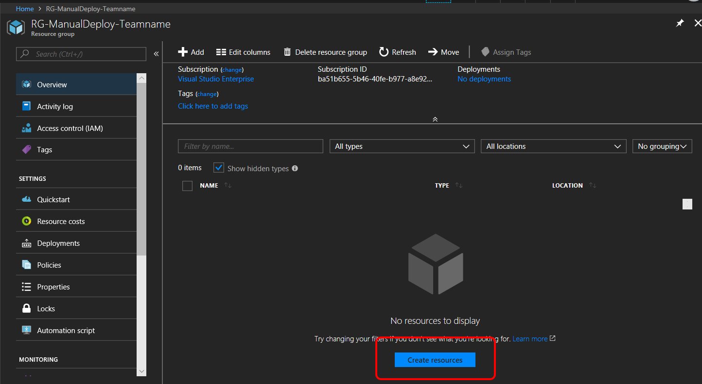
- Search for "Web App", select it and click "Create"
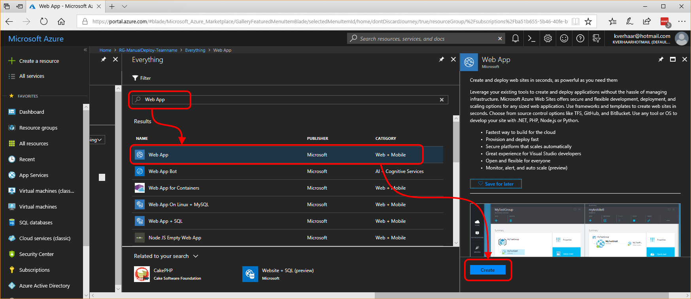
- Enter a name for your new Web App, create a new App Service Plan for it, make sure you turn on Application Insights and click Create
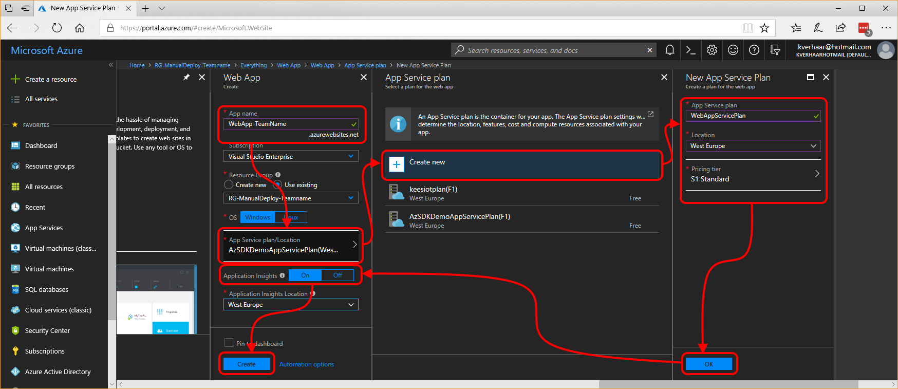
- After some time you will get a notification that creation of the web app was successful
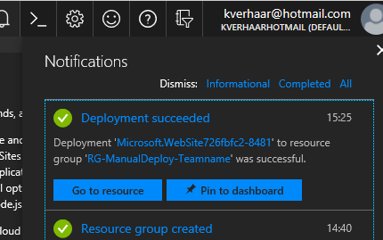
Create a SQL Database
- Go back to your resource group (which now has the web app in it) and click "Add"
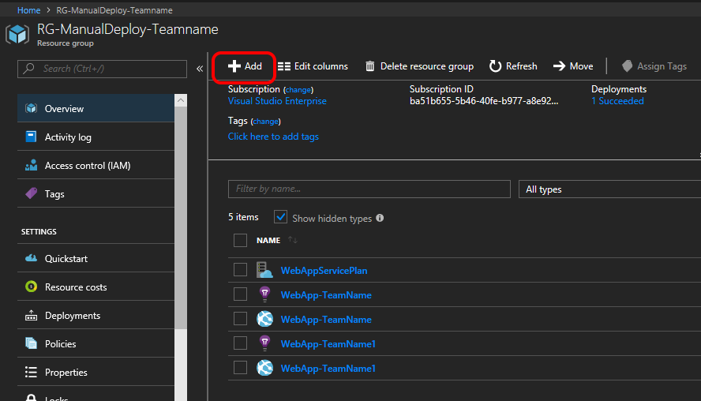
- Search for "SQL Database", click "SQL Database" and then click "Create"
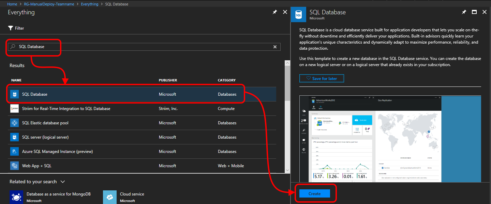
- Type a name for your database, select "Blank database" as source and configure a new server with admin credentials that will hold the database. Make sure you create a complex password, minimal 10 characters, and write down for later usage!
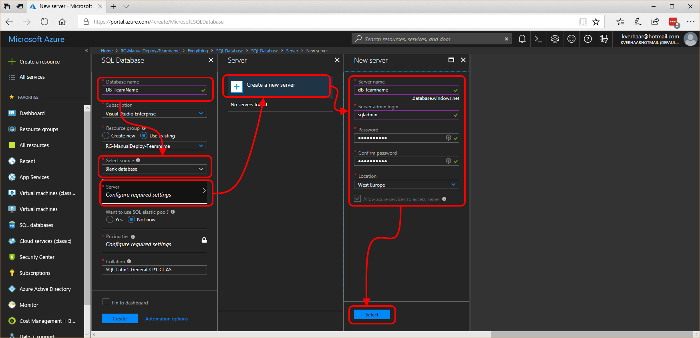
- Change the "Pricing tier" to "Basic" and click "Apply. Then click "Create"
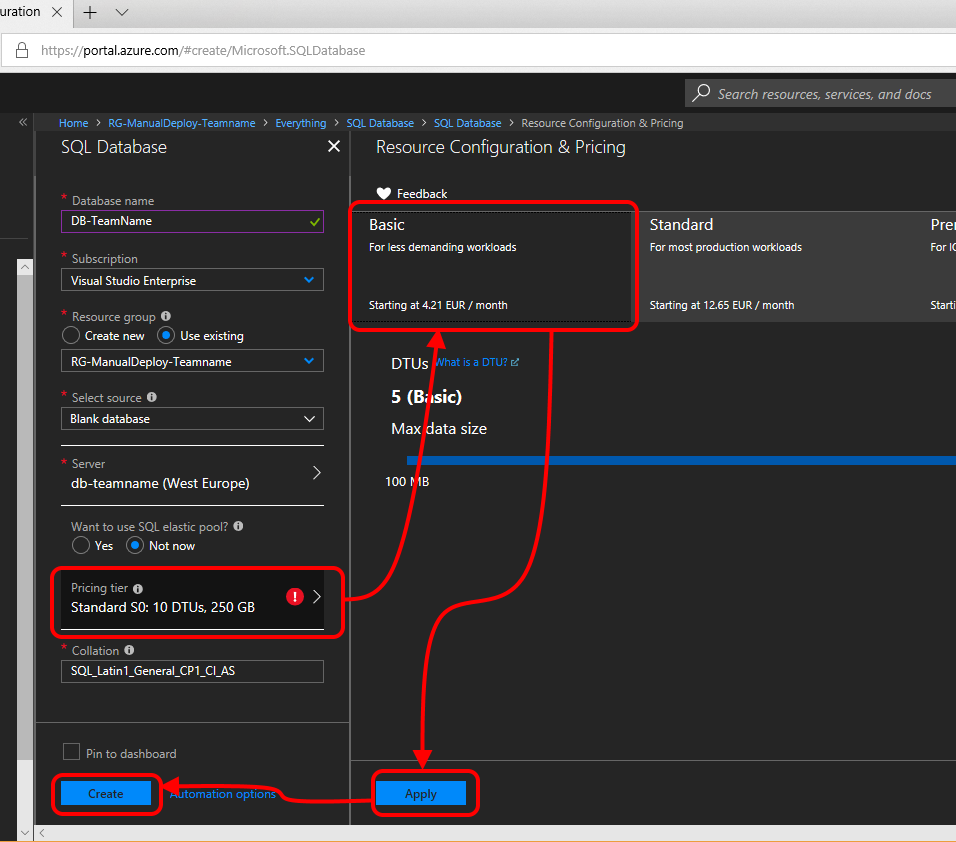
- After a while, your database will be created
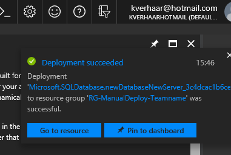
Creating a database table
- Go to your resource group and click your freshly created database
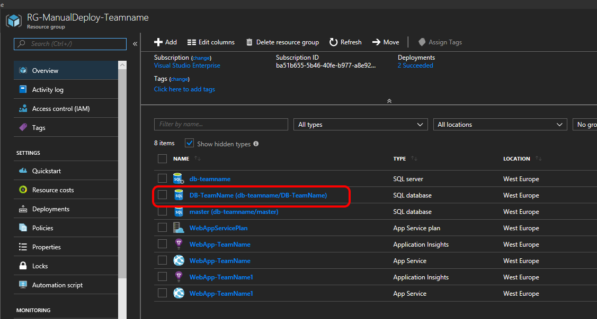
- Click "Query Editor (preview)" and click "Login". Login using the credentials you provided when creating the database.
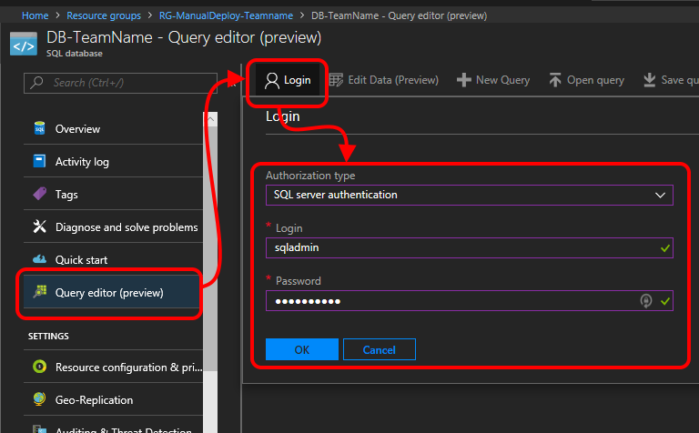
- Type the following query to create the database table:
CREATE TABLE TestArtist (
Id int primary key,
Name varchar(255) not null
)
- Click "Run" to run the query. The query should succeed.
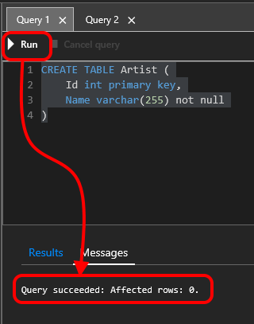
- Click the refresh button and you should see the new table with a primary key column "Id".
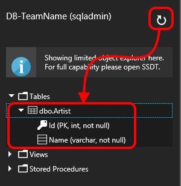